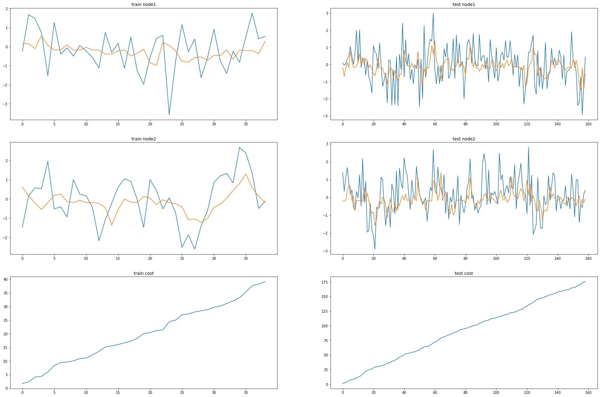
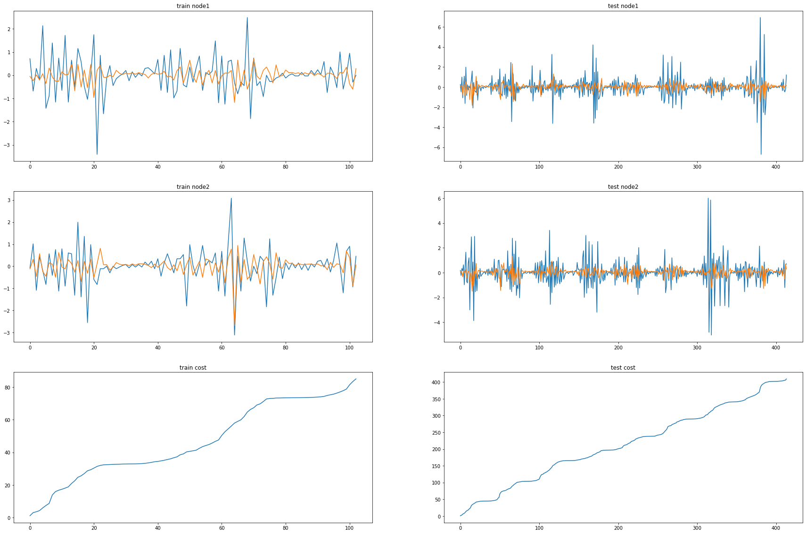
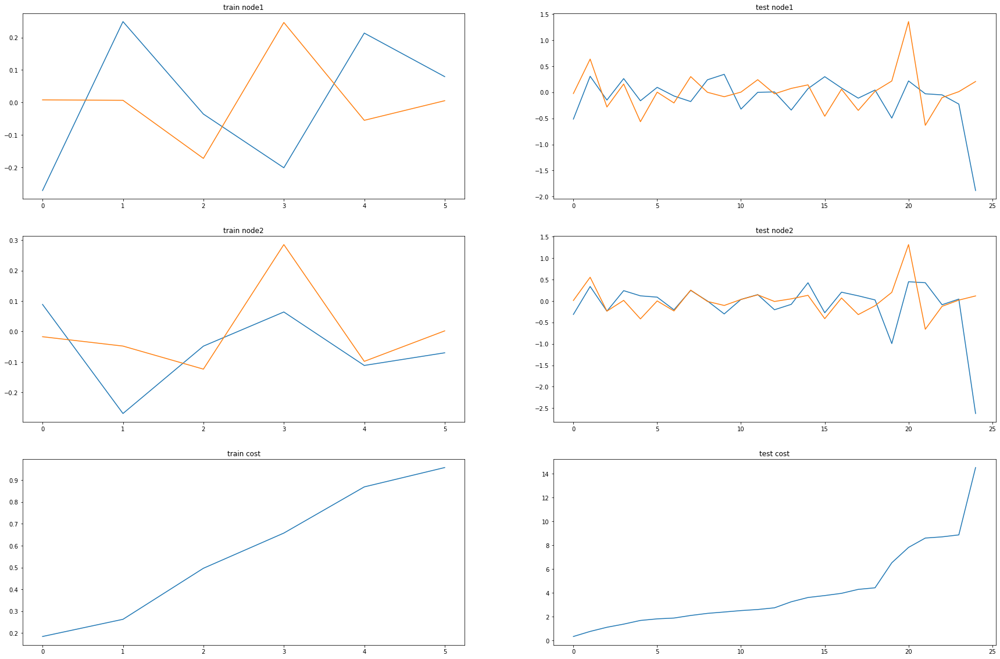
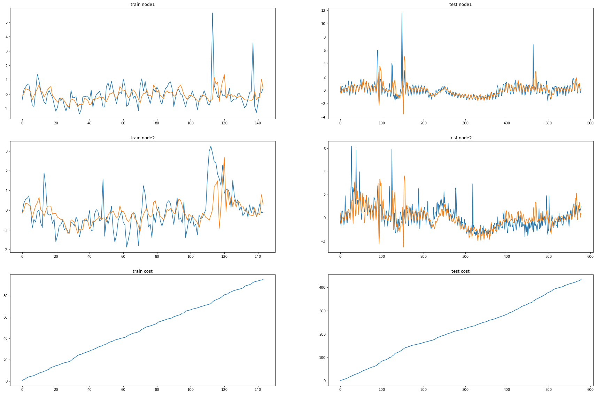
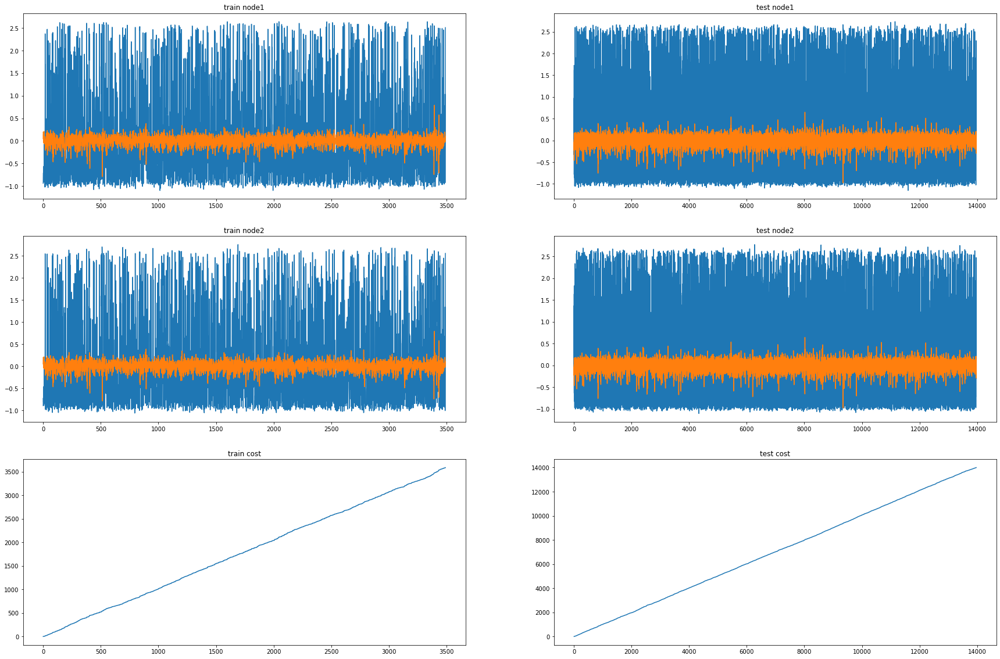
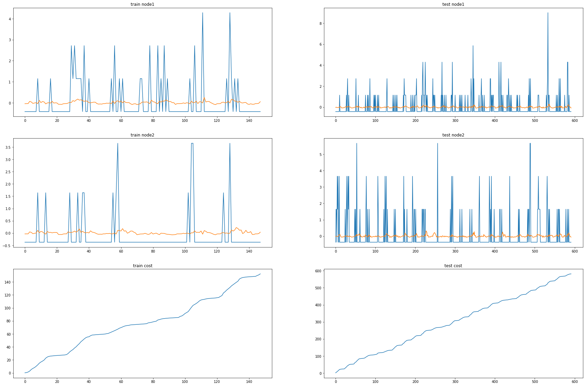

import itstgcnEvolveGCNH
import torch
import itstgcnEvolveGCNH.planner
import pandas as pd
import numpy as np
import randomSimulation Tables
data_dict = itstgcnEvolveGCNH.load_data('./data/fivenodes.pkl')
loader = itstgcnEvolveGCNH.DatasetLoader(data_dict)from torch_geometric_temporal.dataset import ChickenpoxDatasetLoader
loader1 = ChickenpoxDatasetLoader()from torch_geometric_temporal.dataset import PedalMeDatasetLoader
loader2 = PedalMeDatasetLoader()from torch_geometric_temporal.dataset import MontevideoBusDatasetLoader
loader10 = MontevideoBusDatasetLoader()Simulation
plans_stgcn_rand = {
'max_iteration': 15,
'method': ['STGCN', 'IT-STGCN'],
'mrate': [0.7],
'lags': [2],
'nof_filters': [12],
'inter_method': ['linear','nearest'],
'epoch': [50]
}plnr = itstgcnEvolveGCNH.planner.PLNR_STGCN_RAND(plans_stgcn_rand,loader,dataset_name='fivenodes')
plnr.simulate()1/15 is done
2/15 is done
3/15 is done
4/15 is done
5/15 is done
50/50plans_stgcn_rand = {
'max_iteration': 15,
'method': ['STGCN', 'IT-STGCN'],
'mrate': [0.8],
'lags': [2],
'nof_filters': [12],
'inter_method': ['linear','nearest'],
'epoch': [50]
}plnr = itstgcnEvolveGCNH.planner.PLNR_STGCN_RAND(plans_stgcn_rand,loader,dataset_name='fivenodes')
plnr.simulate()plnr = itstgcnEvolveGCNH.planner.PLNR_STGCN_RAND(plans_stgcn_rand,loader,dataset_name='fivenodes')
plnr.simulate()plans_stgcn_rand = {
'max_iteration': 15,
'method': ['STGCN', 'IT-STGCN'],
'mrate': [0],
'lags': [2],
'nof_filters': [12],
'inter_method': ['linear','nearest'],
'epoch': [50]
}plnr = itstgcnEvolveGCNH.planner.PLNR_STGCN_RAND(plans_stgcn_rand,loader,dataset_name='fivenodes')
plnr.simulate()plnr = itstgcnEvolveGCNH.planner.PLNR_STGCN_RAND(plans_stgcn_rand,loader,dataset_name='fivenodes')
plnr.simulate()mindex= [[],[],[],list(range(50,150)),[]]
# mindex= [list(range(50,150)),[],list(range(50,90)),list(range(50,150)),[]] # node 2
plans_stgcn_block = {
'max_iteration': 15,
'method': ['STGCN', 'IT-STGCN'],
'mindex': [mindex],
'lags': [2],
'nof_filters': [12],
'inter_method': ['linear','nearest'],
'epoch': [50]
}plnr = itstgcnEvolveGCNH.planner.PLNR_STGCN_MANUAL(plans_stgcn_block,loader,dataset_name='fivenodes')
plnr.simulate(mindex=mindex,mtype='block')plnr = itstgcnEvolveGCNH.planner.PLNR_STGCN_MANUAL(plans_stgcn_block,loader,dataset_name='fivenodes')
plnr.simulate(mindex=mindex,mtype='block')plans_stgcn_rand = {
'max_iteration': 15,
'method': ['STGCN', 'IT-STGCN'],
'mrate': [0.3,0.8],
'lags': [4],
'nof_filters': [32],
'inter_method': ['linear'],
'epoch': [50]
}plnr = itstgcnEvolveGCNH.planner.PLNR_STGCN_RAND(plans_stgcn_rand,loader1,dataset_name='chickenpox')
plnr.simulate()plnr = itstgcnEvolveGCNH.planner.PLNR_STGCN_RAND(plans_stgcn_rand,loader1,dataset_name='chickenpox')
plnr.simulate()plans_stgcn_rand = {
'max_iteration': 15,
'method': ['STGCN', 'IT-STGCN'],
'mrate': [0],
'lags': [4],
'nof_filters': [32],
'inter_method': ['linear'],
'epoch': [50]
}plnr = itstgcnEvolveGCNH.planner.PLNR_STGCN_RAND(plans_stgcn_rand,loader1,dataset_name='chickenpox')
plnr.simulate()plnr = itstgcnEvolveGCNH.planner.PLNR_STGCN_RAND(plans_stgcn_rand,loader1,dataset_name='chickenpox')
plnr.simulate()my_list = [[] for _ in range(20)] #chickenpox
another_list = list(range(100,400))
my_list[1] = another_list
my_list[3] = another_list
my_list[5] = another_list
my_list[7] = another_list
my_list[9] = another_list
my_list[11] = another_list
my_list[13] = another_list
my_list[15] = another_list
mindex = my_list# mindex= [[],[],[],list(range(50,150)),[]]
# mindex= [list(range(50,150)),[],list(range(50,90)),list(range(50,150)),[]] # node 2
plans_stgcn_block = {
'max_iteration': 15,
'method': ['STGCN', 'IT-STGCN'],
'mindex': [mindex],
'lags': [4],
'nof_filters': [32],
'inter_method': ['linear','nearest'],
'epoch': [50]
}plnr = itstgcnEvolveGCNH.planner.PLNR_STGCN_MANUAL(plans_stgcn_block,loader1,dataset_name='chickenpox')
plnr.simulate(mindex=mindex,mtype='block')plnr = itstgcnEvolveGCNH.planner.PLNR_STGCN_MANUAL(plans_stgcn_block,loader1,dataset_name='chickenpox')
plnr.simulate(mindex=mindex,mtype='block')plans_stgcn_rand = {
'max_iteration': 30,
'method': ['STGCN', 'IT-STGCN'],
'mrate': [0,0.3,0.6],
'lags': [4],
'nof_filters': [2],
'inter_method': ['linear','nearest'],
'epoch': [50]
}plnr = itstgcnEvolveGCNH.planner.PLNR_STGCN_RAND(plans_stgcn_rand,loader2,dataset_name='pedalme')
plnr.simulate()my_list = [[] for _ in range(15)] #pedalme
another_list = list(range(5,25))
my_list[1] = another_list
my_list[3] = another_list
my_list[5] = another_list
my_list[7] = another_list
my_list[9] = another_list
my_list[11] = another_list
mindex = my_list# mindex= [[],[],[],list(range(50,150)),[]] # node 1
# mindex= [list(range(10,100)),[],list(range(50,80)),[],[]] # node 2
# mindex= [list(range(10,100)),[],list(range(50,80)),list(range(50,150)),[]] # node3
plans_stgcn_block = {
'max_iteration': 30,
'method': ['STGCN', 'IT-STGCN'],
'mindex': [mindex],
'lags': [4],
'nof_filters': [2],
'inter_method': ['linear','nearest'],
'epoch': [50]
}plnr = itstgcnEvolveGCNH.planner.PLNR_STGCN_MANUAL(plans_stgcn_block,loader2,dataset_name='pedalme')
plnr.simulate(mindex=mindex,mtype='block')plans_stgcn_rand = {
'max_iteration': 15,
'method': ['STGCN', 'IT-STGCN'],
'mrate': [0.8],
'lags': [4],
'nof_filters': [12],
'inter_method': ['nearest'],
'epoch': [50]
}plnr = itstgcnEvolveGCNH.planner.PLNR_STGCN_RAND(plans_stgcn_rand,loader10,dataset_name='monte')
plnr.simulate()plnr = itstgcnEvolveGCNH.planner.PLNR_STGCN_RAND(plans_stgcn_rand,loader10,dataset_name='monte')
plnr.simulate()plans_stgcn_rand = {
'max_iteration': 15,
'method': ['STGCN', 'IT-STGCN'],
'mrate': [0],
'lags': [4],
'nof_filters': [12],
'inter_method': ['nearest'],
'epoch': [50]
}plnr = itstgcnEvolveGCNH.planner.PLNR_STGCN_RAND(plans_stgcn_rand,loader10,dataset_name='monte')
plnr.simulate()plnr = itstgcnEvolveGCNH.planner.PLNR_STGCN_RAND(plans_stgcn_rand,loader10,dataset_name='monte')
plnr.simulate()my_list = [[] for _ in range(675)] #monte
another_list = list(range(200,350)) #743
for i in np.array(random.sample(range(0, 675), 400)):
my_list[i] = another_list
mindex = my_list# mindex= [[],[],[],list(range(50,150)),[]] # node 1
# mindex= [list(range(10,100)),[],list(range(50,80)),[],[]] # node 2
# mindex= [list(range(10,100)),[],list(range(50,80)),list(range(50,150)),[]] # node3
plans_stgcn_block = {
'max_iteration': 15,
'method': ['STGCN', 'IT-STGCN'],
'mindex': [mindex],
'lags': [4],
'nof_filters': [12],
'inter_method': ['nearest'],
'epoch': [50]
}plnr = itstgcnEvolveGCNH.planner.PLNR_STGCN_MANUAL(plans_stgcn_block,loader10,dataset_name='monte')
plnr.simulate(mindex=mindex,mtype='block')plnr = itstgcnEvolveGCNH.planner.PLNR_STGCN_MANUAL(plans_stgcn_block,loader10,dataset_name='monte')
plnr.simulate(mindex=mindex,mtype='block')import
import pandas as pddata_fivenodes = pd.read_csv('./simulation_results/Real_simulation_reshape/EvolveGCNH_fivedones_Simulation.csv')data_chickenpox = pd.read_csv('./simulation_results/Real_simulation_reshape/EvolveGCNH_chikenpox_Simulation.csv')data_pedal = pd.read_csv('./simulation_results/Real_simulation_reshape/EvolveGCNH_pedalme_Simulation.csv')data_pedal2 = pd.read_csv('./simulation_results/Real_simulation_reshape/EvolveGCNH_pedalme_Simulation_itstgcnsnd.csv')data__wiki = pd.read_csv('./simulation_results/Real_simulation_reshape/EvolveGCNH_wikimath.csv')data_wiki_GSO = pd.read_csv('./simulation_results/Real_simulation_reshape/EvolveGCNH_wikimath_GSO_st.csv')data_windmillsmall = pd.read_csv('./simulation_results/Real_simulation_reshape/EvolveGCNH_windmillsmall.csv')data_monte = pd.read_csv('./simulation_results/Real_simulation_reshape/EvolveGCNH_monte.csv')data = pd.concat([data_fivenodes,data_chickenpox,data_pedal,data__wiki,data_windmillsmall,data_monte]);datadata.to_csv('./simulation_results/Real_simulation_reshape/Final_Simulation_EvolveGCNH.csv',index=False)pedal_wiki_GSO = pd.concat([data_pedal2,data_wiki_GSO])pedal_wiki_GSO.to_csv('./simulation_results/Real_simulation_reshape/Final_Simulation_EvolveGCNH_pedal_wiki_GSO.csv',index=False)Fivenodes
Baseline
pd.merge(data.query("dataset=='fivenodes' and mtype!='rand' and mtype!='block'").groupby(['nof_filters','method','lags'])['mse'].mean().reset_index(),
data.query("dataset=='fivenodes' and mtype!='rand' and mtype!='block'").groupby(['nof_filters','method','lags'])['mse'].std().reset_index(),
on=['method','nof_filters','lags']).rename(columns={'mse_x':'mean','mse_y':'std'}).round(3)Random
pd.merge(data.query("dataset=='fivenodes' and mtype=='rand'").groupby(['mrate','nof_filters','method','lags'])['mse'].mean().reset_index(),
data.query("dataset=='fivenodes' and mtype=='rand'").groupby(['mrate','nof_filters','method','lags'])['mse'].std().reset_index(),
on=['method','nof_filters','mrate','lags']).rename(columns={'mse_x':'mean','mse_y':'std'}).round(3)Block
pd.merge(data.query("dataset=='fivenodes' and mtype=='block'").groupby(['mrate','nof_filters','method'])['mse'].mean().reset_index(),
data.query("dataset=='fivenodes' and mtype=='block'").groupby(['mrate','nof_filters','method'])['mse'].std().reset_index(),
on=['method','nof_filters','mrate']).rename(columns={'mse_x':'mean','mse_y':'std'}).round(3)ChickenpoxDatasetLoader(lags=4)
Baseline
pd.merge(data.query("dataset=='chickenpox' and mtype!='rand' and mtype!='block'").groupby(['nof_filters','method'])['mse'].mean().reset_index(),
data.query("dataset=='chickenpox' and mtype!='rand' and mtype!='block'").groupby(['nof_filters','method'])['mse'].std().reset_index(),
on=['method','nof_filters']).rename(columns={'mse_x':'mean','mse_y':'std'}).round(3)Random
pd.merge(data.query("dataset=='chickenpox' and mtype=='rand'").groupby(['mrate','inter_method','nof_filters','method'])['mse'].mean().reset_index(),
data.query("dataset=='chickenpox' and mtype=='rand'").groupby(['mrate','inter_method','nof_filters','method'])['mse'].std().reset_index(),
on=['method','inter_method','mrate','nof_filters']).rename(columns={'mse_x':'mean','mse_y':'std'}).round(3)Block
pd.merge(data.query("dataset=='chickenpox' and mtype=='block'").groupby(['inter_method','mrate','nof_filters','method'])['mse'].mean().reset_index(),
data.query("dataset=='chickenpox' and mtype=='block'").groupby(['inter_method','mrate','nof_filters','method'])['mse'].std().reset_index(),
on=['method','inter_method','mrate','nof_filters']).rename(columns={'mse_x':'mean','mse_y':'std'})PedalMeDatasetLoader (lags=4)
Baseline
pd.merge(data.query("dataset=='pedalme' and mtype!='rand' and mtype!='block'").groupby(['lags','nof_filters','method'])['mse'].mean().reset_index(),
data.query("dataset=='pedalme' and mtype!='rand' and mtype!='block'").groupby(['lags','nof_filters','method'])['mse'].std().reset_index(),
on=['method','lags','nof_filters']).rename(columns={'mse_x':'mean','mse_y':'std'}).round(3).query("lags==4")Random
pd.merge(data.query("dataset=='pedalme' and mtype=='rand'").groupby(['mrate','lags','inter_method','method'])['mse'].mean().reset_index(),
data.query("dataset=='pedalme' and mtype=='rand'").groupby(['mrate','lags','inter_method','method'])['mse'].std().reset_index(),
on=['method','mrate','lags','inter_method']).rename(columns={'mse_x':'mean','mse_y':'std'}).round(3)Block
pd.merge(data.query("dataset=='pedalme' and mtype=='block'").groupby(['mrate','lags','inter_method','method'])['mse'].mean().reset_index(),
data.query("dataset=='pedalme' and mtype=='block'").groupby(['mrate','lags','inter_method','method'])['mse'].std().reset_index(),
on=['method','mrate','lags','inter_method']).rename(columns={'mse_x':'mean','mse_y':'std'}).round(3).query("lags==4")W_st
pd.merge(data_pedal2.query("mtype=='rand'").groupby(['mrate','lags','inter_method','method'])['mse'].mean().reset_index(),
data_pedal2.query("mtype=='rand'").groupby(['mrate','lags','inter_method','method'])['mse'].std().reset_index(),
on=['method','mrate','lags','inter_method']).rename(columns={'mse_x':'mean','mse_y':'std'}).round(3).query("lags==4")pd.merge(data_pedal2.query("mtype=='block'").groupby(['mrate','lags','inter_method','method'])['mse'].mean().reset_index(),
data_pedal2.query("mtype=='block'").groupby(['mrate','lags','inter_method','method'])['mse'].std().reset_index(),
on=['method','mrate','lags','inter_method']).rename(columns={'mse_x':'mean','mse_y':'std'}).round(3).query("lags==4")WikiMathsDatasetLoader (lags=8)
Baseline
pd.merge(data.query("dataset=='wikimath' and mrate==0").groupby(['lags','nof_filters','method'])['mse'].mean().reset_index(),
data.query("dataset=='wikimath' and mrate==0").groupby(['lags','nof_filters','method'])['mse'].std().reset_index(),
on=['lags','nof_filters','method']).rename(columns={'mse_x':'mean','mse_y':'std'}).round(3)Random
pd.merge(data.query("dataset=='wikimath' and mtype=='rand'").groupby(['mrate','lags','method'])['mse'].mean().reset_index(),
data.query("dataset=='wikimath' and mtype=='rand'").groupby(['mrate','lags','method'])['mse'].std().reset_index(),
on=['method','mrate','lags']).rename(columns={'mse_x':'mean','mse_y':'std'}).round(3)Block
pd.merge(data.query("dataset=='wikimath' and mtype=='block'").groupby(['mrate','lags','method'])['mse'].mean().reset_index(),
data.query("dataset=='wikimath' and mtype=='block'").groupby(['mrate','lags','method'])['mse'].std().reset_index(),
on=['method','mrate','lags']).rename(columns={'mse_x':'mean','mse_y':'std'})missing values on the same nodes
pd.merge(data_wiki_GSO.groupby(['mrate','lags','method'])['mse'].mean().reset_index(),
data_wiki_GSO.groupby(['mrate','lags','method'])['mse'].std().reset_index(),
on=['method','mrate','lags']).rename(columns={'mse_x':'mean','mse_y':'std'}).round(3)WindmillOutputSmallDatasetLoader (lags=8)
Baseline
pd.merge(data.query("dataset=='windmillsmall' and mrate==0").groupby(['lags','method'])['mse'].mean().reset_index(),
data.query("dataset=='windmillsmall' and mrate==0").groupby(['lags','method'])['mse'].std().reset_index(),
on=['method','lags']).rename(columns={'mse_x':'mean','mse_y':'std'}).round(3)Random
pd.merge(data.query("dataset=='windmillsmall' and mtype=='rand'").groupby(['mrate','lags','method'])['mse'].mean().reset_index(),
data.query("dataset=='windmillsmall' and mtype=='rand'").groupby(['mrate','lags','method'])['mse'].std().reset_index(),
on=['method','mrate','lags']).rename(columns={'mse_x':'mean','mse_y':'std'}).round(3)Block
pd.merge(data.query("dataset=='windmillsmall' and mtype=='block'").groupby(['mrate','lags','method'])['mse'].mean().reset_index(),
data.query("dataset=='windmillsmall' and mtype=='block'").groupby(['mrate','lags','method'])['mse'].std().reset_index(),
on=['method','mrate','lags']).rename(columns={'mse_x':'mean','mse_y':'std'}).round(3)Montevideobus (lags=4)
Baseline
pd.merge(data.query("dataset=='monte' and mrate==0").groupby(['lags','method'])['mse'].mean().reset_index(),
data.query("dataset=='monte' and mrate==0").groupby(['lags','method'])['mse'].std().reset_index(),
on=['method','lags']).rename(columns={'mse_x':'mean','mse_y':'std'}).round(3)Random
pd.merge(data.query("dataset=='monte' and mtype=='rand'").groupby(['mrate','lags','inter_method','method'])['mse'].mean().reset_index(),
data.query("dataset=='monte' and mtype=='rand'").groupby(['mrate','lags','inter_method','method'])['mse'].std().reset_index(),
on=['mrate','inter_method','method','mrate','lags']).rename(columns={'mse_x':'mean','mse_y':'std'})Block
pd.merge(data.query("dataset=='monte' and mtype=='block'").groupby(['mrate','lags','inter_method','method'])['mse'].mean().reset_index(),
data.query("dataset=='monte' and mtype=='block'").groupby(['mrate','lags','inter_method','method'])['mse'].std().reset_index(),
on=['method','mrate','inter_method','lags']).rename(columns={'mse_x':'mean','mse_y':'std'})Check
import itstgcnEvolveGCNH
import torch
import numpy as np
import pandas as pd/home/csy/anaconda3/envs/temp_csy/lib/python3.8/site-packages/tqdm/auto.py:21: TqdmWarning: IProgress not found. Please update jupyter and ipywidgets. See https://ipywidgets.readthedocs.io/en/stable/user_install.html
from .autonotebook import tqdm as notebook_tqdmimport matplotlib.pyplot as pltimport randomclass Eval_csy:
def __init__(self,learner,train_dataset):
self.learner = learner
# self.learner.model.eval()
try:self.learner.model.eval()
except:pass
self.train_dataset = train_dataset
self.lags = self.learner.lags
rslt_tr = self.learner(self.train_dataset)
self.X_tr = rslt_tr['X']
self.y_tr = rslt_tr['y']
self.f_tr = torch.concat([self.train_dataset[0].x.T,self.y_tr],axis=0).float()
self.yhat_tr = rslt_tr['yhat']
self.fhat_tr = torch.concat([self.train_dataset[0].x.T,self.yhat_tr],axis=0).float()from plotnine import *T = 500
t = np.arange(T)/T * 5
x = 1*np.sin(2*t)+np.sin(4*t)+1.5*np.sin(7*t)
eps_x = np.random.normal(size=T)*0
y = x.copy()
for i in range(2,T):
y[i] = 0.35*x[i-1] - 0.15*x[i-2] + 0.5*np.cos(0.4*t[i])
eps_y = np.random.normal(size=T)*0
x = x
y = y
plt.plot(t,x,color='C0',lw=5)
plt.plot(t,x+eps_x,alpha=0.5,color='C0')
plt.plot(t,y,color='C1',lw=5)
plt.plot(t,y+eps_y,alpha=0.5,color='C1')
_node_ids = {'node1':0, 'node2':1}
_FX1 = np.stack([x+eps_x,y+eps_y],axis=1).tolist()
_edges1 = torch.tensor([[0,1]]).tolist()
data_dict1 = {'edges':_edges1, 'node_ids':_node_ids, 'FX':_FX1}
# save_data(data_dict1, './data/toy_example1.pkl')
data1 = pd.DataFrame({'x':x,'y':y,'xer':x,'yer':y})
# save_data(data1, './data/toy_example_true1.csv')
loader1 = itstgcnEvolveGCNH.DatasetLoader(data_dict1)dataset = loader1.get_dataset(lags=4)mindex = itstgcn.rand_mindex(dataset,mrate=0) dataset_miss = itstgcn.miss(dataset,mindex,mtype=‘rand’)
mindex = [random.sample(range(0, T), int(T*0.7)),[np.array(list(range(20,30)))]]
dataset_miss = itstgcnEvolveGCNH.miss(dataset,mindex,mtype='block')/home/csy/Dropbox/blog/posts/GCN/itstgcnEvolveGCNH/utils.py:71: UserWarning: Creating a tensor from a list of numpy.ndarrays is extremely slow. Please consider converting the list to a single numpy.ndarray with numpy.array() before converting to a tensor. (Triggered internally at /opt/conda/conda-bld/pytorch_1682343998658/work/torch/csrc/utils/tensor_new.cpp:245.)dataset_padded = itstgcnEvolveGCNH.padding(dataset_miss,interpolation_method='linear')- 학습
lrnr = itstgcnEvolveGCNH.StgcnLearner(dataset_padded)lrnr.learn(filters= 12,epoch=5)lrnr1 = itstgcnEvolveGCNH.ITStgcnLearner(dataset_padded)lrnr1.learn(filters=32,epoch=10)evtor = Eval_csy(lrnr,dataset_padded)evtor1 = Eval_csy(lrnr1,dataset_padded)with plt.style.context('seaborn-white'):
fig, ax = plt.subplots(figsize=(20,10))
ax.plot(evtor.f_tr[:,0],'--o',color='black',alpha=0.5,label='Imputation')
ax.plot(data1['x'][:],'-',color='grey',label='Complete Data')
ax.plot(evtor.fhat_tr[:,0],color='brown',lw=3,label='STGCN')
ax.plot(evtor1.fhat_tr[:,0],color='blue',lw=3,label='ITSTGCN')
ax.legend(fontsize=20,loc='lower left',facecolor='white', frameon=True)
ax.tick_params(axis='y', labelsize=20)
ax.tick_params(axis='x', labelsize=20)with plt.style.context('seaborn-white'):
fig, ax = plt.subplots(figsize=(20,10))
ax.plot(evtor.f_tr[:,1],'--o',color='black',alpha=0.5,label='Imputation')
ax.plot(data1['y'][:],'-',color='grey',label='Complete Data')
ax.plot(evtor.fhat_tr[:,1],color='brown',lw=3,label='STGCN')
ax.plot(evtor1.fhat_tr[:,1],color='blue',lw=3,label='ITSTGCN')
ax.legend(fontsize=20,loc='lower left',facecolor='white', frameon=True)
ax.tick_params(axis='y', labelsize=20)
ax.tick_params(axis='x', labelsize=20)import itstgcnsnd
import torch
import numpy as nploader1 = itstgcnsnd.DatasetLoader(data_dict1)dataset = loader1.get_dataset(lags=2)mindex = itstgcn.rand_mindex(dataset,mrate=0) dataset_miss = itstgcn.miss(dataset,mindex,mtype=‘rand’)
mindex = [random.sample(range(0, T), int(T*0.5)),[np.array(list(range(20,30)))]]
dataset_miss = itstgcnsnd.miss(dataset,mindex,mtype='block')dataset_padded = itstgcnsnd.padding(dataset_miss,interpolation_method='linear')- 학습
lrnr = itstgcnsnd.StgcnLearner(dataset_padded)lrnr.learn(filters=32,epoch=5)lrnr1 = itstgcnsnd.ITStgcnLearner(dataset_padded)lrnr1.learn(filters=32,epoch=5)evtor = Eval_csy(lrnr,dataset_padded)evtor1 = Eval_csy(lrnr1,dataset_padded)with plt.style.context('seaborn-white'):
fig, ax = plt.subplots(figsize=(20,10))
ax.plot(evtor.f_tr[:,0],'--o',color='black',alpha=0.5,label='Imputation')
ax.plot(data1['x'][:],'-',color='grey',label='Complete Data')
ax.plot(evtor.fhat_tr[:,0],color='brown',lw=3,label='STGCN')
ax.plot(evtor1.fhat_tr[:,0],color='blue',lw=3,label='ITSTGCN')
ax.legend(fontsize=20,loc='lower left',facecolor='white', frameon=True)
ax.tick_params(axis='y', labelsize=20)
ax.tick_params(axis='x', labelsize=20)with plt.style.context('seaborn-white'):
fig, ax = plt.subplots(figsize=(20,10))
ax.plot(evtor.f_tr[:,1],'--o',color='black',alpha=0.5,label='Imputation')
ax.plot(data1['y'][:],'-',color='grey',label='Complete Data')
ax.plot(evtor.fhat_tr[:,1],color='brown',lw=3,label='STGCN')
ax.plot(evtor1.fhat_tr[:,1],color='blue',lw=3,label='ITSTGCN')
ax.legend(fontsize=20,loc='lower left',facecolor='white', frameon=True)
ax.tick_params(axis='y', labelsize=20)
ax.tick_params(axis='x', labelsize=20)hyperparameter
import itstgcn
data_dict = itstgcn.load_data('./data/fivenodes.pkl')
loader = itstgcn.DatasetLoader(data_dict)
from torch_geometric_temporal.dataset import ChickenpoxDatasetLoader
loader1 = ChickenpoxDatasetLoader()
from torch_geometric_temporal.dataset import PedalMeDatasetLoader
loader2 = PedalMeDatasetLoader()
from torch_geometric_temporal.dataset import WikiMathsDatasetLoader
loader3 = WikiMathsDatasetLoader()
# from torch_geometric_temporal.dataset import WindmillOutputSmallDatasetLoader
# loader6 = WindmillOutputSmallDatasetLoader()
from torch_geometric_temporal.dataset import MontevideoBusDatasetLoader
loader10 = MontevideoBusDatasetLoader()try:
from tqdm import tqdm
except ImportError:
def tqdm(iterable):
return iterable| Dataset | RecurrentGCN | Method | Missing Rate | Filters | Lags | Mean | SD |
|---|---|---|---|---|---|---|---|
| fivenodes | GConvGRU | IT-STGCN | 0.7 | 12 | 2 | 1.167 | 0.059 |
| fivenodes | GConvGRU | STGCN | 0.7 | 12 | 2 | 2.077 | 0.252 |
| chickenpox | GConvGRU | IT-STGCN | 0.8 | 16 | 4 | 1.586 | 0.199 |
| chickenpox | GConvGRU | STGCN | 0.8 | 16 | 4 | 2.529 | 0.292 |
| pedalme | GConvGRU | IT-STGCN | 0.6 | 12 | 4 | 1.571 | 0.277 |
| pedalme | GConvGRU | STGCN | 0.6 | 12 | 4 | 1.753 | 0.239 |
| wikimath | GConvGRU | IT-STGCN | 0.8 | 12 | 8 | 0.687 | 0.021 |
| wikimath | GConvGRU | STGCN | 0.8 | 12 | 8 | 0.932 | 0.04 |
| windmillsmall | GConvGRU | IT-STGCN | 0.7 | 12 | 8 | 1.180 | 0.035 |
| windmillsmall | GConvGRU | STGCN | 0.7 | 12 | 8 | 1.636 | 0.088 |
| monte | GConvGRU | IT-STGCN | 0.8 | 12 | 4 | 1.096 | 0.019 |
| monte | GConvGRU | STGCN | 0.8 | 12 | 4 | 1.516 | 0.040 |
EvolveGCNH?Object `EvolveGCNH` not found.import torch
import torch.nn.functional as F
from torch_geometric_temporal.nn.recurrent import EvolveGCNH
# from torch_geometric_temporal.dataset import ChickenpoxDatasetLoader
from torch_geometric_temporal.signal import temporal_signal_split
# loader1 = ChickenpoxDatasetLoader()
dataset = loader.get_dataset(lags=2)
dataset1 = loader1.get_dataset(lags=4)
dataset2 = loader2.get_dataset(lags=4)
dataset3 = loader3.get_dataset(lags=8)
# dataset6 = loader6.get_dataset(lags=8)
dataset10 = loader10.get_dataset(lags=4)
train_dataset, test_dataset = temporal_signal_split(dataset, train_ratio=0.2)
train_dataset1, test_dataset1 = temporal_signal_split(dataset1, train_ratio=0.2)
train_dataset2, test_dataset2 = temporal_signal_split(dataset2, train_ratio=0.2)
train_dataset3, test_dataset3 = temporal_signal_split(dataset3, train_ratio=0.2)
# train_dataset6, test_dataset6 = temporal_signal_split(dataset6, train_ratio=0.2)
train_dataset10, test_dataset10 = temporal_signal_split(dataset10, train_ratio=0.2)_a = itstgcn.load_data('./data/Windmillsmall.pkl')dataset6 = _a.get_dataset(lags=8)train_dataset6, test_dataset6 = temporal_signal_split(dataset6, train_ratio=0.2)class RecurrentGCN(torch.nn.Module):
def __init__(self, num_of_nodes, node_features, filters):
super(RecurrentGCN, self).__init__()
self.recurrent = EvolveGCNH(num_of_nodes, node_features)
self.linear = torch.nn.Linear(node_features, 1)
def forward(self, x, edge_index, edge_weight):
h = self.recurrent(x, edge_index, edge_weight)
h = F.relu(h)
h = self.linear(h)
return hfivenodes Nodes = 2, Filters =
model = RecurrentGCN(num_of_nodes=5, node_features=2, filters= 12)
optimizer = torch.optim.Adam(model.parameters(), lr=0.01)
model.train()
for epoch in tqdm(range(200)):
cost = 0
_b=[]
_d=[]
for time, snapshot in enumerate(train_dataset):
y_hat = model(snapshot.x, snapshot.edge_index, snapshot.edge_attr).reshape(-1)
cost = cost + torch.mean((y_hat-snapshot.y)**2)
_b.append(y_hat)
_d.append(cost)
cost = cost / (time+1)
cost.backward()
optimizer.step()
optimizer.zero_grad()100%|██████████| 200/200 [00:13<00:00, 14.93it/s]model.eval()
cost = 0
_a=[]
_a1=[]
for time, snapshot in enumerate(test_dataset):
y_hat = model(snapshot.x, snapshot.edge_index, snapshot.edge_attr).reshape(-1)
cost = cost + torch.mean((y_hat-snapshot.y)**2)
_a.append(y_hat)
_a1.append(cost)
cost = cost / (time+1)
cost = cost.item()
print("MSE: {:.4f}".format(cost))MSE: 1.1026_c = [_a1[i].detach() for i in range(len(_a1))]
_e = [_d[i].detach() for i in range(len(_d))]fig, (( ax1,ax2),(ax3,ax4),(ax5,ax6)) = plt.subplots(3,2,figsize=(30,20))
ax1.set_title('train node1')
ax1.plot([train_dataset.targets[i][0] for i in range(train_dataset.snapshot_count)])
ax1.plot(torch.tensor([_b[i].detach()[0] for i in range(train_dataset.snapshot_count)]))
ax2.set_title('test node1')
ax2.plot([test_dataset.targets[i][0] for i in range(test_dataset.snapshot_count)])
ax2.plot(torch.tensor([_a[i].detach()[0] for i in range(test_dataset.snapshot_count)]))
ax3.set_title('train node2')
ax3.plot([train_dataset.targets[i][1] for i in range(train_dataset.snapshot_count)])
ax3.plot(torch.tensor([_b[i].detach()[1] for i in range(train_dataset.snapshot_count)]))
ax4.set_title('test node2')
ax4.plot([test_dataset.targets[i][1] for i in range(test_dataset.snapshot_count)])
ax4.plot(torch.tensor([_a[i].detach()[1] for i in range(test_dataset.snapshot_count)]))
ax5.set_title('train cost')
ax5.plot(_e)
ax6.set_title('test cost')
ax6.plot(_c)
Chickenpox Nodes = 4, Filters =
model1 = RecurrentGCN(num_of_nodes=20 ,node_features=4, filters=12)
optimizer1 = torch.optim.Adam(model1.parameters(), lr=0.01)
model1.train()
for epoch in tqdm(range(200)):
cost = 0
_b=[]
_d=[]
for time, snapshot in enumerate(train_dataset1):
y_hat = model1(snapshot.x, snapshot.edge_index, snapshot.edge_attr).reshape(-1)
cost = cost + torch.mean((y_hat-snapshot.y)**2)
_b.append(y_hat)
_d.append(cost)
cost = cost / (time+1)
cost.backward()
optimizer1.step()
optimizer1.zero_grad()100%|██████████| 200/200 [00:50<00:00, 3.95it/s]model1.eval()
cost = 0
_a=[]
_a1=[]
for time, snapshot in enumerate(test_dataset1):
y_hat = model1(snapshot.x, snapshot.edge_index, snapshot.edge_attr).reshape(-1)
cost = cost + torch.mean((y_hat-snapshot.y)**2)
_a.append(y_hat)
_a1.append(cost)
cost = cost / (time+1)
cost = cost.item()
print("MSE: {:.4f}".format(cost))MSE: 0.9892_e = [_d[i].detach() for i in range(len(_d))]
_c = [_a1[i].detach() for i in range(len(_a1))]fig, (( ax1,ax2),(ax3,ax4),(ax5,ax6)) = plt.subplots(3,2,figsize=(30,20))
ax1.set_title('train node1')
ax1.plot([train_dataset1.targets[i][0] for i in range(train_dataset1.snapshot_count)])
ax1.plot(torch.tensor([_b[i].detach()[0] for i in range(train_dataset1.snapshot_count)]))
ax2.set_title('test node1')
ax2.plot([test_dataset1.targets[i][0] for i in range(test_dataset1.snapshot_count)])
ax2.plot(torch.tensor([_a[i].detach()[0] for i in range(test_dataset1.snapshot_count)]))
ax3.set_title('train node2')
ax3.plot([train_dataset1.targets[i][1] for i in range(train_dataset1.snapshot_count)])
ax3.plot(torch.tensor([_b[i].detach()[1] for i in range(train_dataset1.snapshot_count)]))
ax4.set_title('test node2')
ax4.plot([test_dataset1.targets[i][1] for i in range(test_dataset1.snapshot_count)])
ax4.plot(torch.tensor([_a[i].detach()[1] for i in range(test_dataset1.snapshot_count)]))
ax5.set_title('train cost')
ax5.plot(_e)
ax6.set_title('test cost')
ax6.plot(_c)
Pedalme Nodes = 4, Filters = 12
model2 = RecurrentGCN(num_of_nodes=15, node_features=4, filters=12)
optimizer2 = torch.optim.Adam(model2.parameters(), lr=0.01)
model2.train()
for epoch in tqdm(range(200)):
cost = 0
_b=[]
_d=[]
for time, snapshot in enumerate(train_dataset2):
y_hat = model2(snapshot.x, snapshot.edge_index, snapshot.edge_attr).reshape(-1)
cost = cost + torch.mean((y_hat-snapshot.y)**2)
_b.append(y_hat)
_d.append(cost)
cost = cost / (time+1)
cost.backward()
optimizer2.step()
optimizer2.zero_grad()100%|██████████| 200/200 [00:04<00:00, 48.87it/s]model2.eval()
cost = 0
_a=[]
_a1=[]
for time, snapshot in enumerate(test_dataset2):
y_hat = model2(snapshot.x, snapshot.edge_index, snapshot.edge_attr).reshape(-1)
cost = cost + torch.mean((y_hat-snapshot.y)**2)
_a.append(y_hat)
_a1.append(cost)
cost = cost / (time+1)
cost = cost.item()
print("MSE: {:.4f}".format(cost))MSE: 0.5801_e = [_d[i].detach() for i in range(len(_d))]_c = [_a1[i].detach() for i in range(len(_a1))]fig, (( ax1,ax2),(ax3,ax4),(ax5,ax6)) = plt.subplots(3,2,figsize=(30,20))
ax1.set_title('train node1')
ax1.plot([train_dataset2.targets[i][0] for i in range(train_dataset2.snapshot_count)])
ax1.plot(torch.tensor([_b[i].detach()[0] for i in range(train_dataset2.snapshot_count)]))
ax2.set_title('test node1')
ax2.plot([test_dataset2.targets[i][0] for i in range(test_dataset2.snapshot_count)])
ax2.plot(torch.tensor([_a[i].detach()[0] for i in range(test_dataset2.snapshot_count)]))
ax3.set_title('train node2')
ax3.plot([train_dataset2.targets[i][1] for i in range(train_dataset2.snapshot_count)])
ax3.plot(torch.tensor([_b[i].detach()[1] for i in range(train_dataset2.snapshot_count)]))
ax4.set_title('test node2')
ax4.plot([test_dataset2.targets[i][1] for i in range(test_dataset2.snapshot_count)])
ax4.plot(torch.tensor([_a[i].detach()[1] for i in range(test_dataset2.snapshot_count)]))
ax5.set_title('train cost')
ax5.plot(_e)
ax6.set_title('test cost')
ax6.plot(_c)
Wikimaths Nodes = 8, Filters =
model3 = RecurrentGCN(num_of_nodes=1068,node_features=8, filters=12)
optimizer3 = torch.optim.Adam(model3.parameters(), lr=0.01)
model3.train()
for epoch in tqdm(range(50)):
cost = 0
_b=[]
_d=[]
for time, snapshot in enumerate(train_dataset3):
y_hat = model3(snapshot.x, snapshot.edge_index, snapshot.edge_attr).reshape(-1)
cost = cost + torch.mean((y_hat-snapshot.y)**2)
_b.append(y_hat)
_d.append(cost)
cost = cost / (time+1)
cost.backward()
optimizer3.step()
optimizer3.zero_grad()100%|██████████| 50/50 [03:07<00:00, 3.75s/it]model3.eval()
cost = 0
_a=[]
_a1=[]
for time, snapshot in enumerate(test_dataset3):
y_hat = model3(snapshot.x, snapshot.edge_index, snapshot.edge_attr).reshape(-1)
cost = cost + torch.mean((y_hat-snapshot.y)**2)
_a.append(y_hat)
_a1.append(cost)
cost = cost / (time+1)
cost = cost.item()
print("MSE: {:.4f}".format(cost))MSE: 0.7479_e = [_d[i].detach() for i in range(len(_d))]_c = [_a1[i].detach() for i in range(len(_a1))]fig, (( ax1,ax2),(ax3,ax4),(ax5,ax6)) = plt.subplots(3,2,figsize=(30,20))
ax1.set_title('train node1')
ax1.plot([train_dataset3.targets[i][0] for i in range(train_dataset3.snapshot_count)])
ax1.plot(torch.tensor([_b[i].detach()[0] for i in range(train_dataset3.snapshot_count)]))
ax2.set_title('test node1')
ax2.plot([test_dataset3.targets[i][0] for i in range(test_dataset3.snapshot_count)])
ax2.plot(torch.tensor([_a[i].detach()[0] for i in range(test_dataset3.snapshot_count)]))
ax3.set_title('train node2')
ax3.plot([train_dataset3.targets[i][1] for i in range(train_dataset3.snapshot_count)])
ax3.plot(torch.tensor([_b[i].detach()[1] for i in range(train_dataset3.snapshot_count)]))
ax4.set_title('test node2')
ax4.plot([test_dataset3.targets[i][1] for i in range(test_dataset3.snapshot_count)])
ax4.plot(torch.tensor([_a[i].detach()[1] for i in range(test_dataset3.snapshot_count)]))
ax5.set_title('train cost')
ax5.plot(_e)
ax6.set_title('test cost')
ax6.plot(_c)
Windmillsmall Nodes = 8, Filters =
model6 = RecurrentGCN(num_of_nodes=11, node_features=8, filters=12)
optimizer6 = torch.optim.Adam(model6.parameters(), lr=0.01)
model6.train()
for epoch in tqdm(range(10)):
cost = 0
_b=[]
_d=[]
for time, snapshot in enumerate(train_dataset6):
y_hat = model6(snapshot.x, snapshot.edge_index, snapshot.edge_attr).reshape(-1)
cost = cost + torch.mean((y_hat-snapshot.y)**2)
_b.append(y_hat)
_d.append(cost)
cost = cost / (time+1)
cost.backward()
optimizer6.step()
optimizer6.zero_grad()100%|██████████| 10/10 [01:19<00:00, 7.99s/it]model6.eval()
cost = 0
_a=[]
_a1=[]
for time, snapshot in enumerate(test_dataset6):
y_hat = model6(snapshot.x, snapshot.edge_index, snapshot.edge_attr).reshape(-1)
cost = cost + torch.mean((y_hat-snapshot.y)**2)
_a.append(y_hat)
_a1.append(cost)
cost = cost / (time+1)
cost = cost.item()
print("MSE: {:.4f}".format(cost))MSE: 1.0017_e = [_d[i].detach() for i in range(len(_d))]_c = [_a1[i].detach() for i in range(len(_a1))]fig, (( ax1,ax2),(ax3,ax4),(ax5,ax6)) = plt.subplots(3,2,figsize=(30,20))
ax1.set_title('train node1')
ax1.plot([train_dataset6.targets[i][0] for i in range(train_dataset6.snapshot_count)])
ax1.plot(torch.tensor([_b[i].detach()[0] for i in range(train_dataset6.snapshot_count)]))
ax2.set_title('test node1')
ax2.plot([test_dataset6.targets[i][0] for i in range(test_dataset6.snapshot_count)])
ax2.plot(torch.tensor([_a[i].detach()[0] for i in range(test_dataset6.snapshot_count)]))
ax3.set_title('train node2')
ax3.plot([train_dataset6.targets[i][1] for i in range(train_dataset6.snapshot_count)])
ax3.plot(torch.tensor([_b[i].detach()[1] for i in range(train_dataset6.snapshot_count)]))
ax4.set_title('test node2')
ax4.plot([test_dataset6.targets[i][1] for i in range(test_dataset6.snapshot_count)])
ax4.plot(torch.tensor([_a[i].detach()[1] for i in range(test_dataset6.snapshot_count)]))
ax5.set_title('train cost')
ax5.plot(_e)
ax6.set_title('test cost')
ax6.plot(_c)
Monte Nodes = 4, Filters =
model10 = RecurrentGCN(num_of_nodes=675, node_features=4, filters=12)
optimizer10 = torch.optim.Adam(model10.parameters(), lr=0.01)
model10.train()
for epoch in tqdm(range(200)):
cost = 0
_b=[]
_d=[]
for time, snapshot in enumerate(train_dataset10):
y_hat = model10(snapshot.x, snapshot.edge_index, snapshot.edge_attr).reshape(-1)
cost = cost + torch.mean((y_hat-snapshot.y)**2)
_b.append(y_hat)
_d.append(cost)
cost = cost / (time+1)
cost.backward()
optimizer10.step()
optimizer10.zero_grad()100%|██████████| 200/200 [01:14<00:00, 2.68it/s]model10.eval()
cost = 0
_a=[]
_a1=[]
for time, snapshot in enumerate(test_dataset10):
y_hat = model10(snapshot.x, snapshot.edge_index, snapshot.edge_attr).reshape(-1)
cost = cost + torch.mean((y_hat-snapshot.y)**2)
_a.append(y_hat)
_a1.append(cost)
cost = cost / (time+1)
cost = cost.item()
print("MSE: {:.4f}".format(cost))MSE: 0.9818_e = [_d[i].detach() for i in range(len(_d))]
_c = [_a1[i].detach() for i in range(len(_a1))]fig, (( ax1,ax2),(ax3,ax4),(ax5,ax6)) = plt.subplots(3,2,figsize=(30,20))
ax1.set_title('train node1')
ax1.plot([train_dataset10.targets[i][0] for i in range(train_dataset10.snapshot_count)])
ax1.plot(torch.tensor([_b[i].detach()[0] for i in range(train_dataset10.snapshot_count)]))
ax2.set_title('test node1')
ax2.plot([test_dataset10.targets[i][0] for i in range(test_dataset10.snapshot_count)])
ax2.plot(torch.tensor([_a[i].detach()[0] for i in range(test_dataset10.snapshot_count)]))
ax3.set_title('train node2')
ax3.plot([train_dataset10.targets[i][10] for i in range(train_dataset10.snapshot_count)])
ax3.plot(torch.tensor([_b[i].detach()[10] for i in range(train_dataset10.snapshot_count)]))
ax4.set_title('test node2')
ax4.plot([test_dataset10.targets[i][10] for i in range(test_dataset10.snapshot_count)])
ax4.plot(torch.tensor([_a[i].detach()[10] for i in range(test_dataset10.snapshot_count)]))
ax5.set_title('train cost')
ax5.plot(_e)
ax6.set_title('test cost')
ax6.plot(_c)